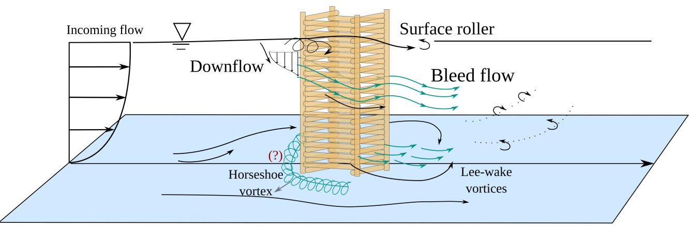
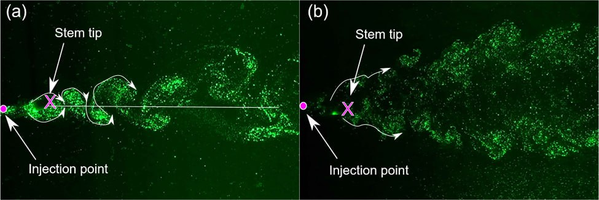

Flow and Sediment Transport around Nature-Based Solutions for River Restoration
Understanding the effect of bleeding flow through the pore spaces of nature-based solutions on main flow features typically seen in solid obstructions


Erosion evolution on an immersed bed around a pier:
Multiphase Flow Modeling of Non-Newtonian Fluid through Porous Media
Volume of fluid modeling of grout flow inside a porous ballast box for railroad reinforcement.

Flow and Sediment Transport around Complex In-Stream Structures: Munitions
Link to publication: Scour around underwater unexploded ordnances (UXOs): An experimental and computational investigation
Vortex Structures around Flexible Vegetation
Wake characteristics around a flexible stem in (a) low Reynolds number and (b) high Reynolds number
